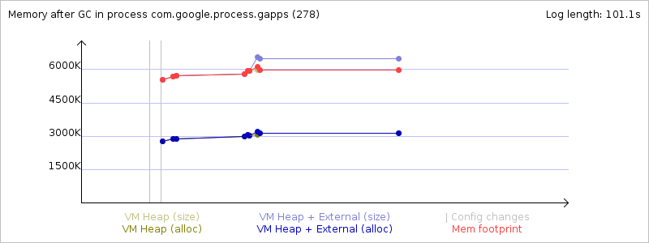
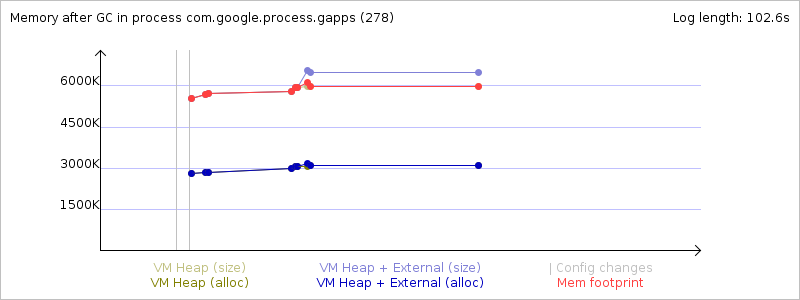

Mem info from 'meminfo' service:
** MEMINFO in pid 278 [com.google.process.gapps] **
native dalvik other total
size: 5260 6023 N/A 11283
allocated: 4914 3199 N/A 8113
free: 125 2824 N/A 2949
(Pss): 1494 2573 4836 8903
(shared dirty): 876 1600 5212 7688
(priv dirty): 1460 644 4184 6288
Objects
Views: 0 ViewRoots: 0
AppContexts: 0 Activities: 0
Assets: 3 AssetManagers: 3
Local Binders: 21 Proxy Binders: 28
Death Recipients: 2
OpenSSL Sockets: 0
SQL
heap: 358 MEMORY_USED: 358
PAGECACHE_OVERFLOW: 78 MALLOC_SIZE: 50
DATABASES
pgsz dbsz Lookaside(b) Dbname
1 24 105 talk.db
1 11 0 (attached) transient_talk_db
1 31 27 gservices.db
1 13 31 subscribedfeeds.db
1 7 29 googlesettings.db
Asset Allocations
zip:/system/app/GoogleServicesFramework.apk:/resources.arsc: 1555K
Memory usage from GC system logs:
Memory usage from GC event logs:
